Day 1
Page 4 of 7
A NextWork guided series where I build a CI/CD pipeline on AWS one day at a time. Every day has its write-up as a PDF to download and the screenshots from the work. New days are added as I complete them.
Three days completed. Download a day's write-up, or jump to its screenshots.
Day 1
Day 2
Day 3
Next
Day 1 · September 2026 · NextWork guided project
Launched an EC2 instance, connected to it over SSH from VS Code, installed Java and Maven, and generated a Java web app from a Maven template. This is the foundation of the CI/CD pipeline that the rest of the challenge builds on.
icacls (/reset, /grant:r, /inheritance:r).maven-archetype-webapp template (BUILD SUCCESS).src/main/webapp, WEB-INF/web.xml, index.jsp and pom.xml.index.jsp to show my own message.Hardest part: connecting to the instance over SSH. Most rewarding: the first successful SSH connection. Time: about 5 hours.
Account and server details are covered.
PDF not showing? Some phones cannot display a PDF inside a page. Open it in a new tab or download it.
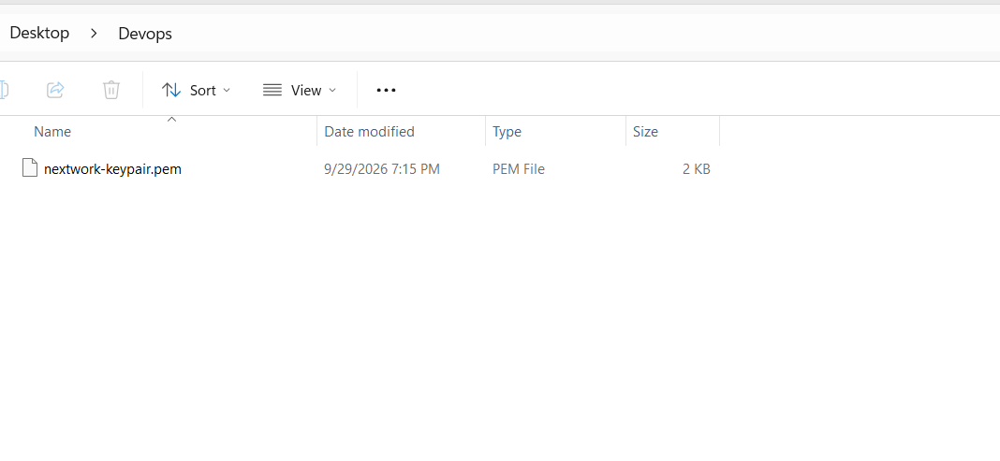
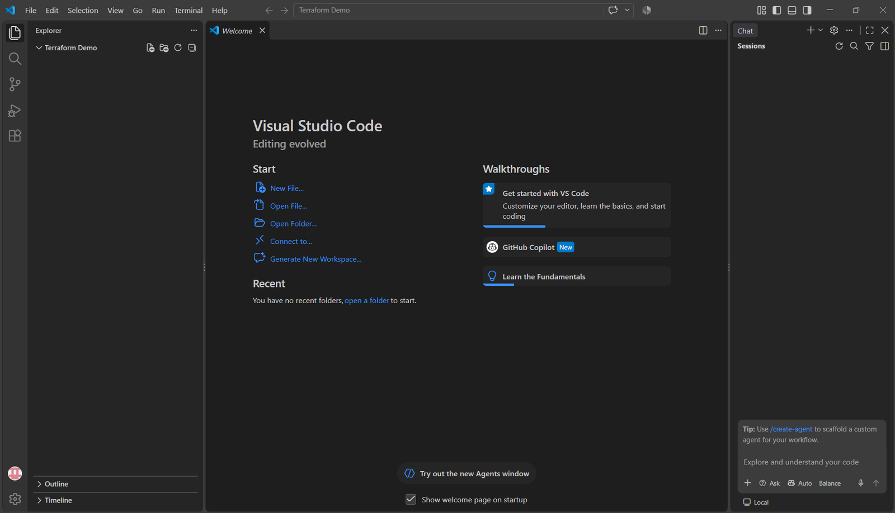
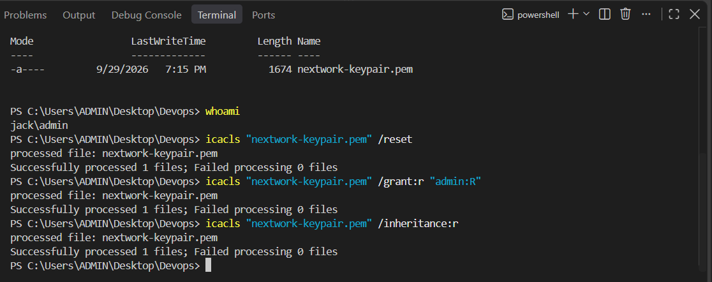
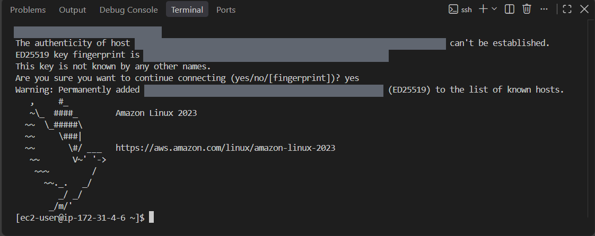
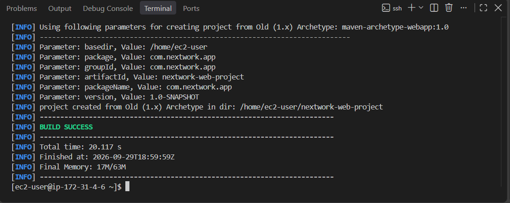
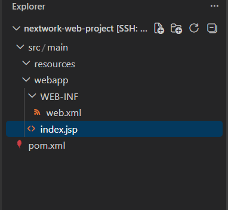
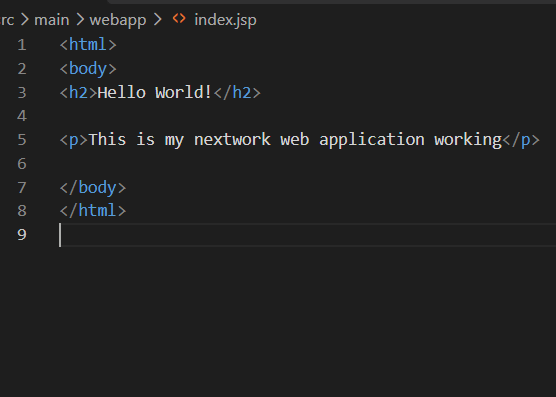
Day 2 · October 2026 · NextWork guided project
Installed Git on the EC2 development instance, connected my Java web app to a GitHub repository, and fixed a failed push by authenticating with a personal access token instead of a password.
sudo dnf install git -y and confirmed it with git --version (2.50.1).git init.git add ., git commit -m and git push -u origin master.git log (the commit author showed the default "EC2 Default User", which is why setting your Git identity matters), pushed a second change to index.jsp, and added a README.md.Hardest part: generating the access token. Most rewarding: seeing my changes pushed to GitHub. Time: about 5 hours.
Account and server details are covered.
PDF not showing? Some phones cannot display a PDF inside a page. Open it in a new tab or download it.
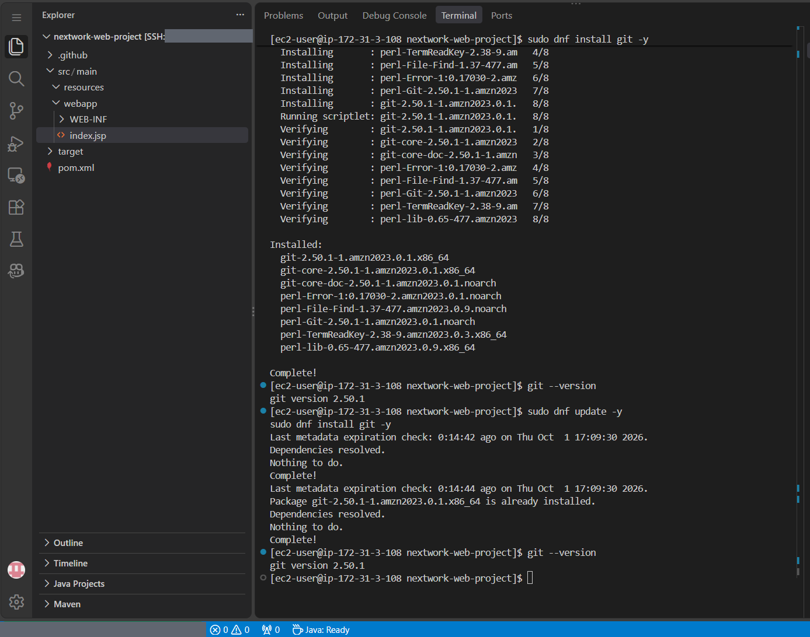
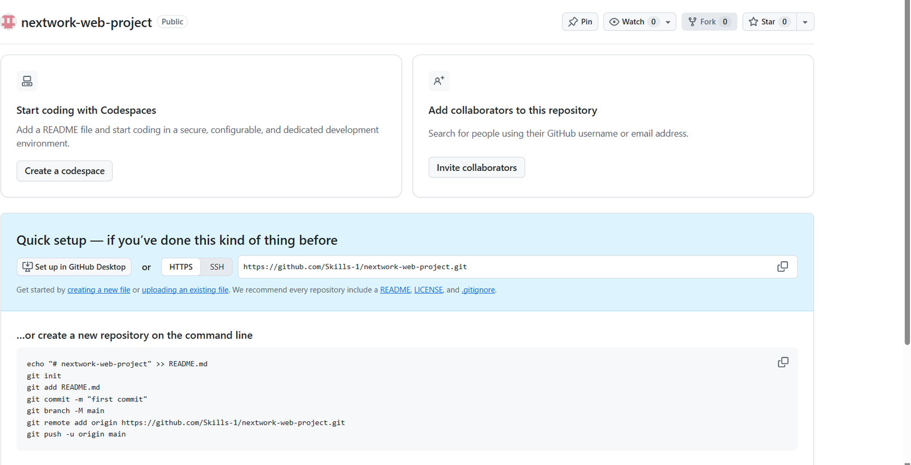
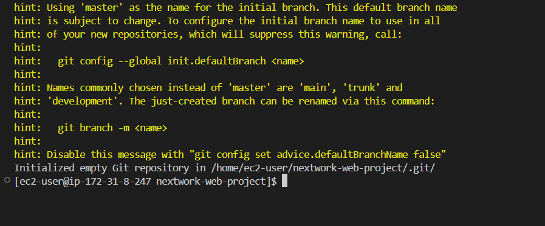
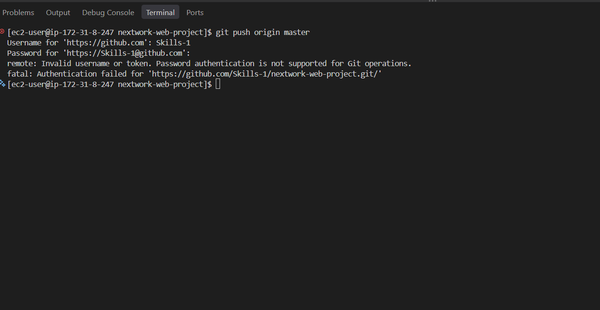
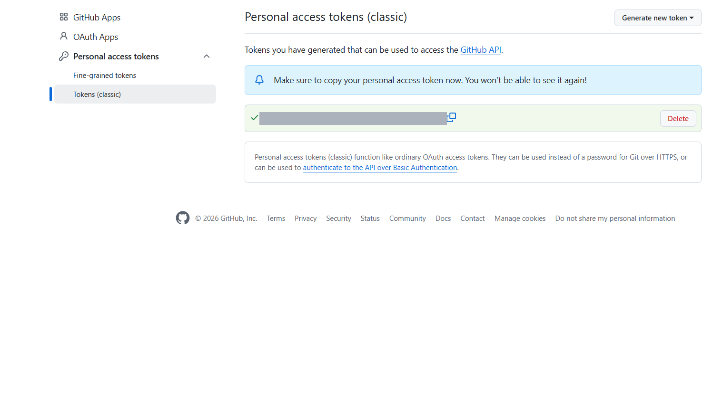
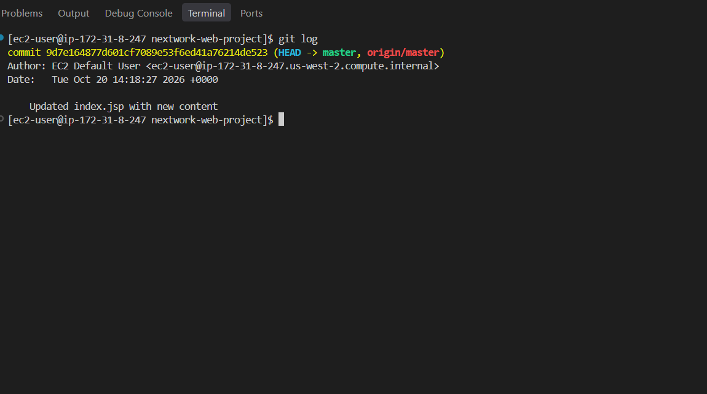
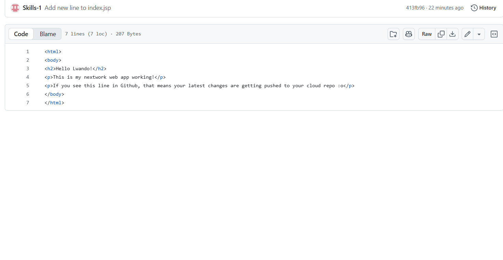
Day 3 · October 2026 · NextWork guided project
Set up AWS CodeArtifact as the artifact repository for my CI/CD pipeline: connected Maven to it, solved a permissions error with an IAM policy and role, and confirmed that my web app's dependencies were stored in the repository.
nextwork) and a repository (nextwork-devops-cicd) with Maven Central as its upstream repository.GetAuthorizationToken, GetRepositoryEndpoint, ReadFromRepository and sts:GetServiceBearerToken, attached to an IAM role on the instance instead of hard-coded credentials.settings.xml (server, profile and mirror) that points at the repository and reads its authentication token from an environment variable. My first attempt failed because I created the file in the wrong folder.Hardest part: creating the settings.xml file in the right folder. Most rewarding: seeing CodeArtifact compiling. Time: about 8 hours.
Account and server details are covered.
PDF not showing? Some phones cannot display a PDF inside a page. Open it in a new tab or download it.
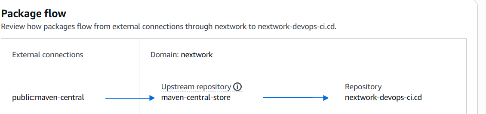
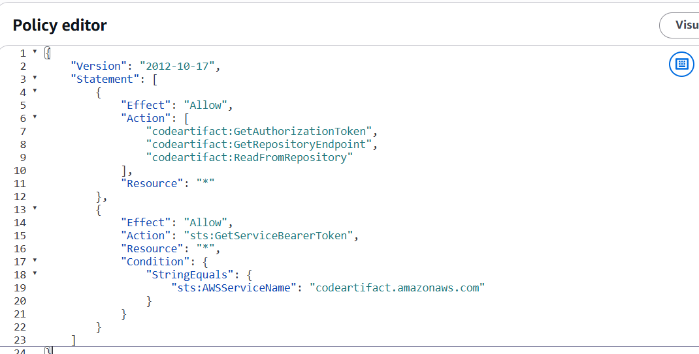
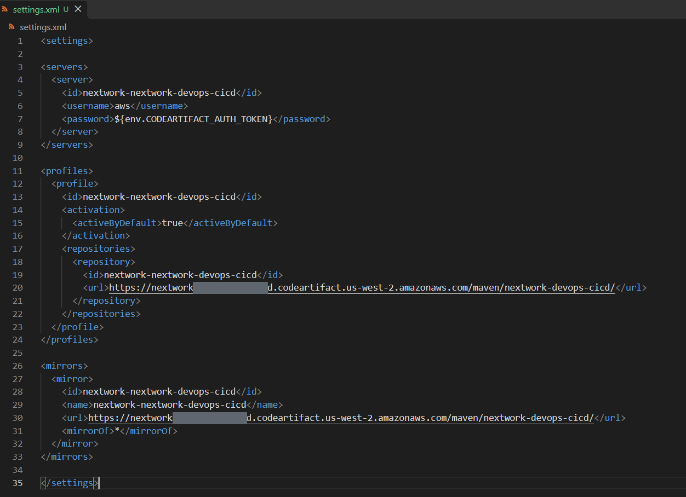
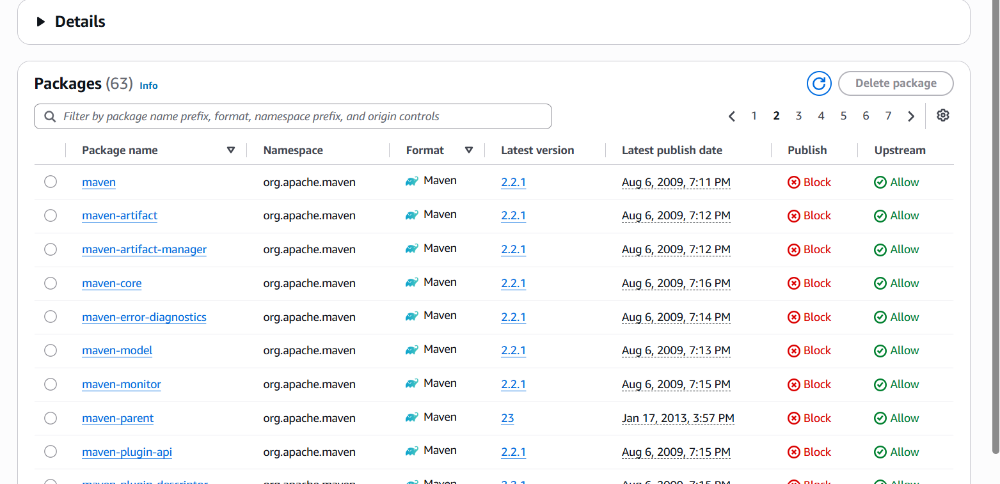